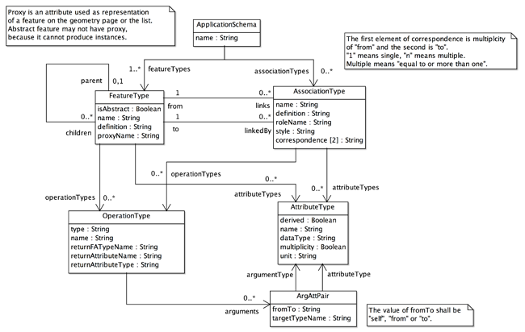

Modeller
応用スキーマ設計
はじめに
ここでは，応用スキーマの設計法を学びます．皆さんの研究や調査の対象になる，実世界に起きるものごとを抽象化してできるモデルを，一定のルールに従って形式的に表現すると，それは応用スキーマと呼ばれます．gittok では，そのルールは統一モデリング言語 (UML) というグラフィック言語を使って表現します．言語というと，文章を思い浮かべるかもしれませんが，他者との間で意志の疎通をはかるための道具が言語であるとすれば，それは文章，つまり文字の配列とは限りません．漢字はもともと象形文字であり，それはグラフィックだったということも思い出してみましょう．グラフィック言語とは，一定の規則に基づいて作る図 (diagram) によって情報を伝達する言語です．
ここでは，まずUMLを使ったスキーマ表現法として，クラス図を紹介します．次に，一般地物モデルという，応用スキーマが守るべき規則を説明します．応用スキーマの詳細を解説します．さらに，Modeller ページの操作法を示します．しかし最初に，このページに関係する講義用スライドを読みましょう．
講義用スライド
UMLとクラス図
一般地物モデル
....応用スキーマ
....地物型
....関連型
....属性型
....操作型
....引数属性対の型
Modeller の操作法
講義用スライド
01 空間思考
02 モデルとその形式表現
03 一般地物モデルと応用スキーマ
UMLとクラス図
UML (Unified Modeling Language) は，オブジェクト指向モデリングのために開発されたグラフィック言語として，今日では情報システム開発の現場で広く使用されています．その仕様はOMGという非営利の標準化団体が提供しています．私たちは，応用スキーマの記述を行うためのルール（つまりスキーマのスキーマ）もUMLで記述します．gittokで使用しているUMLは Version 1.4 に準拠するものですが，これは著者がArgo UMLというフリーのソフトを使用しているためです．皆さんもUMLで図を描くときは，ArgoUMLや，astah* community などのフリーソフトを使うことができますし，お金を払えば，より高機能なソフトを使うこともできます．
UML の知識を得たい人は，参考書がたくさん出ているので手に取ってみるといいでしょう．ちなみに「クラス図」の書き方が理解できれば，gittok が理解しやすくなります．
なぜ，応用スキーマを UML で記述するのでしょうか．地理情報の記述や交換は，可能な限り，世界で共通に使用されている方式を使うといいということは，ご理解いただけると思います．独善的な方法を使うと，関係者が応用スキーマを共有するのが，困難になります．幸い，ISOが定めている地理情報の国際標準や，それに準拠する日本のJIS規格では，UMLで応用スキーマを記述することとしています．ただし，gittok では若干独自の規則を導入していますので，その部分は個々に説明します．
例えば下の図１の例は，建物 (Building) というものは，名称 (name)，所有者 (owner)，形状 (shape)，底地の面積 (area) で説明でき，形状 (shape) を入力して面積を出力する操作 (getArea) をもち，結果は実数になる，と言っています．図中，area についている / は，値が別の所で作られるということを示しています．操作の結果がareaに入ることは陽には示されていませんが，gittok では応用スキーマを設計するときに，対応関係を宣言します．この部分は gittok 独自のルールといっても良いでしょう．何れにしても，このようなクラス図を記述するためには、UMLに加えて，地理情報のモデルの形式化について，下に示す一般地物モデルが示しているルールを，理解する必要があります．
図１．UMLによる簡単なクラス図の例
一般地物モデル (General Feature Model)
実世界の現象の抽象概念を地物といいます．例えば台風や津波のような自然現象，道路や建物のような人工構造物，国境や土地利用規制の範囲など，人間が考えた想像上の線や領域などが上げられます．ところで地物は，大きく分けて２つの側面からみることができます．１つは型 (type) として見ること，もう１つはインスタンス (instance)としてみることです．例えば，「あれは橋だ」という表現は，目の前にあるものはどのような種類のものか，つまり目の前にあるものの型（種類）を述べたことになります．次に，「あれはレインボーブリッジだ」というときは，目にに見えるものは，どの個物であるかを，ものがもつ名称という性質をつかって述べたことになります．個物は，型で分類される実例とも考えられるので，インスタンス (instance)といわれます． ここでは地物型とその記述のためのルールである一般地物モデル (General Feature Model: GFM) について説明します．インスタンスの記述法については，Acquisition Controllerのページで説明します．
まず，UMLは一般的な言語なので，地理情報特有の語彙については，何も示していません．そこで，UMLの規則のもとで，地理情報特有のルールを示して，応用スキーマを記述することになります．逆に言えば，地物型を含むクラス図（応用スキーマ）を描くためには，GFMに従うべきであり，さらにGFMはUMLに従うのです．応用スキーマは，実世界の現象を抽象化したモデルです．GFMはそのモデルをかくためのメタモデル，UMLはGFMが準拠するメタメタモデルということになります．

図２．gittok で使用する一般地物モデルの全体構成
一般地物モデルは，応用スキーマを記述するための規則です．この規則は，ISO 19109 - Rules for Application Schemaを単純化し，さらに gittok 用に設計し直したものです．図2の中心に位置するクラスは地物型と関連型です．また，これらを保持する応用スキーマ型があります．地物型及び関連型は属性型と操作型を持ちますが，それは，これらで個々のクラス（地物や関連）が特徴づけられるからです．ここで属性とは，ものがもつ固有の性質のことです．また操作とは，適当なアルゴリズムを実行して属性を得る動作（もしくは方法）のことです．また，属性と操作をまとめてプロパティといいます．操作を実行するためには入力データとしての属性が必要になりますが，それは特に操作の引数 (argument) と呼ばれます．その引数が，既存の地物型や関連型のどの属性と対応するかを示すのが，引数・属性ペア (ArgAttPair) です．以後，GFM に含まれるクラスとそれらの関係について解説します．
応用スキーマ (ApplicationSchema)
上記の図２で示したクラス図で一番上に表示されているクラスはApplicationSchemaという名前をもっています．これは応用スキーマが守るべきルールを示すクラスであり，そのインスタンスは応用スキーマです．応用スキーマは複数の地物型 (FeatureType) と，複数の地物関連型 (AssociationType) をもつことができます．私はいま，「複数の」と言いましたが，これは「一つ以上の」と同じ意味です．また，「ことができる」と言いましたが，これは「そうではない」場合があることを認める表現です．例えば地物同士に関連性がなければ，AssociationTypeは応用スキーマには含まれません．
なぜ，属性と操作（まとめてプロパティといいます）があれば，地物や関連を記述することができるのでしょうか．地理情報システムは従来から，地物の属性を使って，空間解析と呼ばれる操作を実行させて，なんらかの知見を得るという方法を使ってきました．その背景には，実世界を理解する哲学，つまり認識論があります．例えばアリストテレスは，以下の様に考えたと言われています．
実世界の現象は，個物として，または概念として捉えることができる．前者は命題の主語になり，後者は述語になる．例えばソクラテスは人間である，という命題において，ソクラテスは個物であり，人間は概念である．前者は第一実体，後者は第二実体という．述語になるものは第二実体だけではない．アリストテレスは第二実体を含む１０種類の形相が述語になるとした．それは，第二実体，いつ，どこ，量，質，保持するもの，姿勢，能動，受動，そして他者との関係である．ところで，第二実体が主語になることがあるが，そのときは，述語になる第二実体はより抽象度の高い第二実体である．例えば「人間は動物である」など．
この説明の中で，いつ，どこ，量，質，保持するもの，そして姿勢は，地物の属性です．能動と受動は地物の振る舞い，言い換えれば操作です．そして他の第二実体との関係は関連性の記述といえるでしょう．さらに第二実体が主語になるときの，述語である第二実体との関係はより抽象度の高い実体との関係です．これは汎化の関係などと呼ばれます．UMLや一般地物モデルは，このような考え方を参考にして作られています．
地物型 (FeatureType)
ここに示したFeatureTypeは，このクラスが示すルールに従って地物型の定義を行うべし，という規定を表すので，地物型ではありません．つまり地物型というクラスを定義するためのメタクラスです．ところで，地物型 の名称は，誤解を招くといけませんので，一意でなければいけません．つまり，一つの応用スキーマの中には，同じ名前 (name) の地物型が複数存在してはいけません．また英語で表現するときは頭文字は大文字にします．それによって地物型と，それがもつ固有の特性であるプロパティ (property) を見分けることができます．すでに述べたようにプロパティは，属性 (attribute) と操作 (operation) に分けることができます．そして，プロパティの名前の頭文字は小文字にします．属性は静的なプロパティで，名前，色，材質，サイズなど様々なものが考えられます．操作は動的なプロパティで，入力されるパラメータを使ってその都度処理した結果を返す働きがあります．以下，図２に示した地物型を記述するときに必要な要素の説明を行います．
属性
typeID: 地物は他の型と識別するためのIDをもちます．ただし，このIDは gittok が自動的に与えるものであり，ユーザがこれを直接入力したり変更することはありません．
isAbstract: 地物型は抽象型または具象型です．抽象型とはインスタンスをもたない型です．例えば，行政境界も，植生境界も，土地利用境界もみな，「境界」であり境界ならどのようなものでも持つプロパティを持ちます．しかし，境界という地物が実際の世界に存在するわけではなく，実際の世界には行政境界や植生界のインスタンスとして現れるとすれば，境界は抽象型であり，行政境界や植生境界などは，境界のプロパティを継承する下位の具象型になります．地物型が抽象型になる場合は，ブール値をとる isAbstract は真 (true) です．具象型の場合は偽 (false) です．
name: 地物型は名前をもちます.
definition: 名前だけでは，ユーザに充分な理解が得られないかもしれないので，定義 (definition)を示す文章を与えます．
関連
parent: 地物型は，他の地物型と汎化関係（継承関係）をもつことがあります．上記の例でいえば，境界は行政境界や植生境界の上位型 (parent)になります．上位型になるということは，下位の型は上位の型のプロパティを持つ，言い換えれば，継承するので，この関係は継承関係 (inheritance) とも呼ばれます．
children: 一方で，行政境界などは，特殊な境界として，境界の下位型 (children) になって，上位型のプロパティを受け継ぐ，つまり継承します．下位から上位を見た関係は汎化関係ですが，上位から下位を見た場合は，特化の関係と言います．例えば「境界を特化した型の中には行政界がある．」というような表現をすることがあります．
proxy: 従来「地理情報は，図形と属性の対である．」という説明を見受けることがありました．この説明は，分かったようで，分からない説明だと思います．例えば，属性は図形の性質のこと，とすると，図形が「本郷ビル」というような名前をもつのでしょうか．それは変です．では何が本郷ビルなのでしょうか．それは地物でなければいけません．つまり，地物は属性をもつ，となります．では図形は何でしょうか．これも地物がもつ属性の一部です．従って「地物は図形を含む一つ以上の属性をもつ．」というべきでしょう．これに対して「地物は，地図上に示される実世界のオブジェクトの表現である．」という定義を見ることがあります．これも曖昧な定義です．インスタンスをもたない抽象型はどうするのでしょうか．また，地物にとって点や線など幾何はそのものがもつ属性であり，地物は地図上に示される幾何図形を上位概念にするものではありません．これが gittok の立場ですし，図１でもそのような表現をしています．しかし私たちがグラフィック・ディスプレイでみる地図上の図形は，地物を代理するグラフィックと考えられます．このグラフィックをマウスなどで指定すると，それがどの地物かを探り，その地物がもつ他の属性を表示する機能があれば便利です．そこで gittok では，地物を代理する図形表現を認める，という意味で，地物はproxyという役割名をもつ幾何属性をもつことができ，画面上で，マウスカーソル等で図形を指定すると，それが代表する地物インスタンスを指定することにしています．つまり，proxyは地物への窓口の役割をもちます．
attributeTypes: 地物がもつ，特有の性質を属性といいます．例えば，その地物固有の名前，長さ，高さ，材質など，たいてい属性は複数あります．attributeTypesは複数の属性の型 (AttributeType) を記述するためにあります．
operationTypes: 地物固有の属性を，それが必要になったときに，任意の処理を行って得る行為を操作といいます．地物は複数の操作をもつ可能性があります．operationTypesは複数の操作の型 (OperationType)を記述するためにあります．
links: 地物型が，他の地物型と関連するときは，関連型を通して行います．linksを使えば，関連型を介して複数の地物型との関連を定義できます
linkedBy: 地物型が，別の地物型から関連されるときは，関連型を通して行います．linkedByを使えば，１つの地物型からの関連を定義できます．
関連型 (AssociationType)
関連（Association）とはこの場合，地物どうしの対等な関係のことです．関連も実世界に生起する現象です．地物型はlinksによって，一つ以上の関連型と結びつくことができます．つまり，地物は複数の種類の地物と関連を介して結ばれます．例えば，学校は校舎，体育館，校庭などと関連する，というようにです．地理情報標準では，関連型は地物型の下位型として定義していますが，構造が複雑になるので， gittok では独自の型としています．
属性
typeID: 関連は他の関連型と識別するためのIDをもちます．ただし，このIDは gittok が自動的に与えるものであり，ユーザはこれを直接使用することはしません．
name: 関連型は名前をもちます.
definition: 名前だけでは，ユーザに充分な理解が得られないかもしれないので，定義 (definition)を示す文章を与えます．
roleName: 相手の地物型と，どのような役割のもとで結びついたかを明確にするため，役割名(roleName)が使われます．例えば建物は校舎，駅舎，倉庫といった役割名のどれかを持つかもしれません．
style: 下で説明するfromインスタンスが0個以上のtoインスタンスと結びつく方法は，styleで示します．これが 合成 (composite) である場合は，fromインスタンスが消滅すると，関連づくtoインスタンスは全て消滅します．そのため，合成は強い関連ともいわれます．なお，関連には集成 (aggregation) ないし集約と呼ばれる関連がありますが，普通の関連との区別があいまいなため，gittok では普通の関連に含めてしまっています．なお現状，composite の指定はできますが，扱いはassociation と同じです．
multiplicity: 結びつく地物のインスタンスが複数あり得るときは，多重性があるといい，ここでその指定を行います．
関連
from: 関連する地物型はfromによって示されます，
to: 関連される地物型はtoによって示されます．
attributeTypes: 関連がもつ，特有の性質を属性といいます．例えば，その関連固有の名前，地物どうしの関連に関わる，例えば両者の隔たりを示す距離など，たいてい属性は複数あります．attributeTypesは複数の属性の型 (AttributeType) を記述するためにあります．
operationTypes: 関連は複数の操作をもつ可能性があります．operationTypesは複数の操作の型 (OperationType)を記述するためにあります．
属性型 (AttributeType)
属性型は，地物や関連の属性を定義する型です．「赤い自動車」は，色という属性をもつ自動車という地物と考えられます．そして色は文字列というデータ型で表されるかもしれません．従って，この場合，自動車の属性は，属性の名前が色，属性のデータ型が文字列になります．しかし，上部が赤で下の方が白くぬられているような場合は，色という属性は多重度をもつことになります．ところで，車高という属性がある場合，そのデータ型は実数になるでしょうが，それがメートルなのか．センチメートルなのか，つまり単位が必要になります．さらに，属性は直接値を与えられる場合と，操作の結果与えられる場合があります．そこで，属性型は以下の要素で定義されます．
属性
derived: もしこの属性のとる値が，操作の戻り値になる場合，そのような属性は派生属性 (derived attribute) と呼ばれます．
name: 属性の名前です（例えば「色」）dataType: 属性を表現するためのデータ型です．
multiplicity: 属性値が複数になる可能性があるときは，これが真になります．そうでなければ false です．
unit: 属性値が計量単位をもつ場合は，ここで指定します．
ところで，属性のデータ型は，以下に示す空間属性型，時間属性型，場所属性型及び主題属性型に分類できます．
空間属性型 (Spatial attribute type) ：空間的な性質（位置，形状）．２次元の幾何空間では，点 (SG_Point)，曲線 (SG_Curve) 及び曲面 (SG_Surface) などの型がこれにあたります．ここでSG_という接頭辞は空間の幾何 (Spatial Geometry) という意味です．
時間属性型 (Temporal attribute type) ：時間的な性質（時点，継続期間）．１次元の時間幾何空間では，瞬間 (TG_Instance), 期間 (TG_Period)がこれにあたります．現状，時間属性を利用することはできません．
場所属性型 (Location attribute type) ：空間属性も時間属性も，ある空間の中を占める場所を示しますが，間接的に場所を示すのがこの属性です．住所，郵便番号，地番のような地理的な場所を示す情報は地理識別子 (geographic identifier) と呼ばれます．また，URLのように，仮想的な空間の場所を示す情報も，場所属性として扱います．gittokでは，場所属性として，住所 (address)，URL，画像URL (ImageLocation)，映像URL (VideoLoation)，音声URL (SoundLocation)を利用できるようにしています．実世界の中の場所や仮想世界の中の場所を合わせて，Placeと呼びますが，gittok では，実空間及び仮想空間中の場所をあわせて Place 属性と呼びます．ちなみにISO/TC 211が制定している ISO 19155: 2012 - Place identifier (PI) architectureでもplace を"identifiable part of any space"と定義しています．
主題属性型 (Thematic attribute type) ：主題とは，情報の意図，題目を端的に示す言葉を指しますが，ここではその地物を端的に示す言葉という意味でとらえます．空間，時間，場所以外の，その地物を端的に示す属性は主題属性と呼ばれ，名前，サイズ，色，材質など，論議領域によって，様々な属性が考えられます．
ここで紹介した様々な属性については，Attribute Type Designer の項で、より詳細な解説を行います．
操作型 (OperationType)
操作 (operation) は，on demand な属性とも考えられます．例えば，建物の形を示す多角形を与えられて，その建物の面積を返すとか，ネットワーク，出発点，目的地を与えられて，最短経路を示す曲線を返すとか，ある地域を指定して，その地域と最も類似の特性をもつ地域を返すとか，様々な操作が考えられます．これらの操作に地球上の位置が関係する場合は，空間解析 (Spatial Analysis) ともいわれます．操作は，その名前，入力される引数 (argument) 及び戻り値の型 (returnType) などで定義されます．また，戻り値が入る属性を指定することができますが，このような属性は派生属性と呼ばれます．
操作を実行するプログラムは，必要に応じて様々な地物の操作として共有できるとよいでしょう．そこで，あらかじめ操作を実行するためのプログラムを作成しておき，その引数と戻り値が，地物型がもつどの属性に対応するかを選択することによって，実際の操作が実行できるようにすると便利です．gittok では，操作に ArgAttPair を参照し，そこに，あらかじめ決められた操作の引数 (argumentType)と，地物の属性 (attributeType)との対を定義しておくようにします．
属性
type:この操作を含む操作クラス（型）の型名です．
name:操作の名前です．
returnFATypeID: 戻り値が所属する地物または関連の型のIDです．
returnAttributeType: 操作の結果がもつデータ型です．
returnAttributeName: 操作の結果を収納する属性の名前です．この属性は上記のreturnTypeを型としなければいけません．
操作が実行され，戻り値が得られると，gittok はreturnFATypeID を使って，応用スキーマから戻り値が入る地物型または関連型の定義を得ます．そして，returnAttributeType を見て，データ型が一致することを確認した上で，returnAttributeName が示す変数に，戻り値を確認します．
関連
arguments: 操作を実行するための引数，及びそれに対応する地物属性が何かを示す引数と属性の対への関連です．
引数属性対の型 (ArgAttPair)
操作の引数は，操作を含む地物や関連の属性になります．また，関連の操作の場合は，from地物，to地物の属性も引数になり得ます．
属性
fromTo: この属性は，引数と対応する地物属性が，自身が含まれる地物ないし関連に含まれる場合は"self"，関連の操作の場合は，from地物に含まれる場合は "from"，to地物に含まれる場合は "to" になります．
関連
argumentType: 操作の引数は名前，データ型，多重度及び単位で定義できますので，それ自体が属性型をとります．この関連は，引数を定義する属性型への関連です．
attributeType: 引数に対応する，地物又は関連の属性を示す属性型への関連です．
引数に対応する属性は，引数を含む地物（関連）のものか，from側の地物のものか，to側の地物のものかが分かるようにしておきます．例えば，建物と，その前面にある道路上にある街路灯までの距離をもとめる，という操作をBuildingToStreetLightという関連型がもっているとします．このとき，建物の中心位置 (from) と街路灯の位置 (to) を引数にして，長さを求め，それを関連の属性である距離とするでしょう．
操作の種類や空間解析については Analyst ページで、より詳細の説明を行います．
Modeller ページ の操作

図３．Modeller ページの操作画面
上に示した図3は，GFMの中心となる地物型及び関連型，言い換えれば，地物及び関連を定義する上でのルールの骨子を示しています．地物型は親子の継承関係をもつことができ，親がある場合は一つに限るけれど，子となる地物型は複数あってもよいことが，地物型の自己関連によって，示されています．また，地物型は関連型を通じて別の地物型と関連の関係をもつことができます．そのことは，linksとlinkedByという役割で明示されています．一方関連型は，一つの地物型から (from) 別の一つの地物型に (to)関連することを示すことができます．
例えば，道路と建物は人工構造物です．つまり両者とも人工構造物のプロパティを継承します．また，道路の沿道には複数の建物があり得ます．つまり道路は沿道建物という役割をもつ建物と関連します．型同士の関連は一対一ですが，一つの道路インスタンスとは，複数の建物インスタンスが関連するでしょう．このことは，関連型を定義するときに示します．
ところで，既に説明したことですが，地物型や関連型は属性と操作をもつことができます．gittokでは，図3に示したページのFeatureType及びAssoicationTypeがボタンの働きをもつので，これrの上にカーソルを持っていって，クリックすると，それぞれの型の詳細な定義ができるようになっています．その中で，属性と操作の定義を行います．
表示欄
app.schema
セーブした応用スキーマのファイル名がここに，表示されます．
ボタン
FeatureType
地物型の定義と編集と行うFeature Type Modelerを起動します．
AssociationType
関連型の定義と編集を行うAssociation Type Modelerを起動します．
open
作成した応用スキーマが入っている外部ファイル（.aps）を指定し，それを編集可能にします．
save
作成した応用スキーマが入っているファイルを指定し，それを外部に保存します．ファイル名にはならず.apsという接尾辞を付けて下さい．保存するとapp.schema欄にファイル名が表示されます．
日本語
今あなたが読んでいるドキュメントが表示されます．
English
You can read the tutorial written in English.